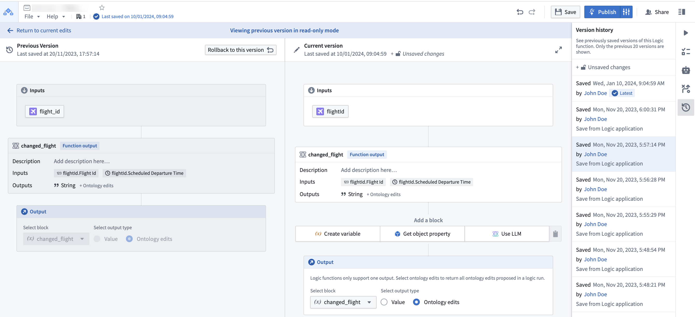
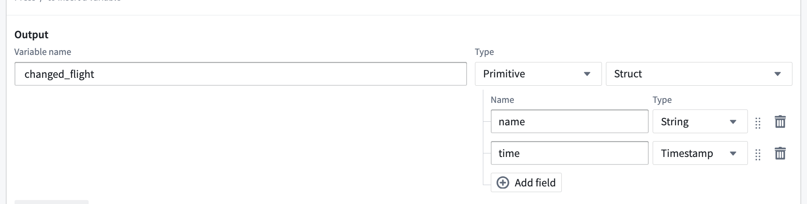
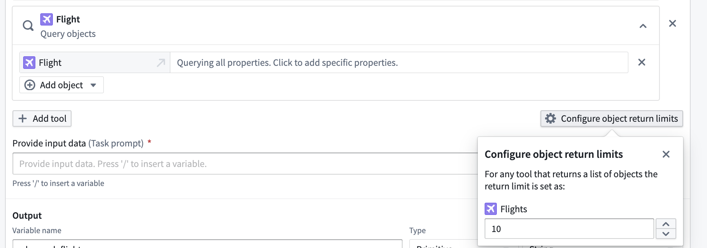

AIP Logic FAQ
This page details some frequently asked questions about the AIP Logic application.
How can I use AIP Logic with the rest of the platform?
Review the documentation on how to use a Logic function.
How do I reduce my token count?
All activity in AIP Logic counts toward token limits, including tool responses. Token limits reset on a per-block basis. You can see the number of tokens used at the end of each message in the Debugger. If the bar is red, consider reducing your token count to facilitate reliable performance.
We recommend the following steps to reduce your token count:
- Select the specific properties needed from your input object, or specify which object properties you want to query to reduce the size of the string (
OBJECT_NAME property1 property2 etc.) that the LLM sends and receives; you can see this in the Debugger by selecting Show raw.
- When using the Query objects tool, select a subset of properties to send to the LLM.
- Consider splitting single blocks into multiple Use LLM blocks; each block has a token limit, so you can try breaking a block into intermediate steps.
- Change your LLM model to 32k.
- Whenever possible, use deterministic blocks such as the transform block, execute block, and apply action block. These blocks help produce more predictable outcomes, and do not use any tokens, making your logic more efficient and manageable.
When should I keep my Logic function in one block versus splitting into multiple blocks?
A single large block allows you to iterate quickly and easily make large changes while experimenting with the LLM's capabilities, but you might want to split your Logic into multiple blocks if:
- You have multiple steps you want the LLM to take and are getting inconsistent results.
- The block is reaching its context limit.
- Each run is taking too long to execute.
Since each block gets its own context window, splitting into multiple blocks can have the following advantages:
- The LLM will only have access to what you pass in; intermediate results in a single large block can be potentially irrelevant.
- You are less likely to run out of tokens.
- Several smaller tasks can potentially execute faster than one long task.
How do I improve the performance of an AIP Logic block?
To improve the performance of an AIP Logic block, try the following suggestions:
- Choose 5-10 examples of inputs / output pairs and run these every time you modify prompts. Save these as unit tests in AIP Logic.
- Provide few-shot examples to the LLM; this can significantly enhance LLM performance by making the task more comprehensible for the model. You can input a system prompt for the LLM to reference.
- If you are seeing surprising failures, validate that the model has the right "understanding" of your data by asking the LLM to explain its plan and understanding of the problem - this can provide insight into what context is missing.
- Consider building a feedback loop with dynamic few-shot examples.
- Use deterministic transform boards such as the transform block, execute block, and apply action block.
- Use AIP Evals to run evaluations. The results analyzer in the Results view clusters failing cases into root-cause categories and proposes targeted prompt edits as you iterate on prompts.
Is there a way to modify the temperature of the LLM or other model parameters?
You can modify the temperature of the LLM, a parameter that represents the randomness of an LLMâs response, by editing the temperature in a Use LLM block's Configuration text field. The default temperature is 0. Lower temperatures return a more deterministic output.
Example code:
{
"temperature": 0.9
}
Is it possible to support semantic search workflows using Logic?
Yes, you can currently add a tool that allows Logic to perform semantic search on the Ontology, made possible either through an action or writing a function-on-object which is then called from AIP Logic. Review the semantic search workflow tutorial to learn more.
How can an LLM âlearnâ from feedback?
You can help an LLM âlearnâ from feedback with this design pattern, if it suits your workflow:
- Whenever the LLM makes a recommendation, capture (1) the recommendation as well as (2) the reasoning. Then, when connecting the Logic function to Workshop and building in a human review process, write back the (3) human feedback as well as the (4) correct human-verified decision. For the sake of this example, imagine we call this writeback object the âSuggestionâ object.
- In your Logic function, enable the LLM to use the Query objects tool on the âSuggestionâ object, searching for other instances where the LLM has made the same recommendation. Let the LLM process the human feedback, then query the LLM about whether to proceed with the LLMâs recommendation.
How can I ensure the output of my Logic is correct?
Add unit tests to check whether the function runs successfully on a given input. You can also use AIP Evals to create evaluation suites for your Logic functions. To generate a suite, open the Evals tab in the right sidebar and select Generate evals. AIP Evals bootstraps the suite with test cases, evaluators, and metrics based on your function. Review and refine the generated test cases and evaluators before running evaluations. The Results view includes a built-in results analyzer that clusters failing cases into root-cause categories, surfaces representative examples, and proposes targeted prompt changes to improve accuracy. Learn more in AIP Evals: Getting started.
How can you create test cases from previous executions?
In Run history, use Add as test case to convert historical execution results into test cases for new or existing evaluation suites. This helps you build comprehensive test suites from function executions.
Can I see previous versions of my Logic?
Yes, you can see and rollback to previously saved versions using the version history sidebar.
Select a prior version from the list to compare with the current state.

Can one LLM block return multiple values?
Yes. By using the "Struct" output type you can return multiple named values.

Can I configure how many objects my tools give to the LLM blocks?
Yes, when you add an Object Query tool on a Function tool in the LLM block, you can select Configure object return limits to choose the number of objects you would like to return from any tool use.

Why does my function execute successfully in AIP Logic Debugger but fail in Workshop or when called via an API?
While testing and developing your AIP Logic function in the Debugger, the function is not subject to the five-minute execution time limit. However, when the function is called from either the Workshop environment or through the function execution API, the five-minute execution time limit is enforced.